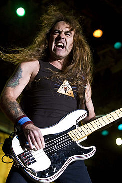

BIOGRAFIA

A banda foi formada no dia de Natal de 1975, logo após o baixista Steve Harris deixar o seu antigo grupo, Smiler. Depois de ter suas composições rejeitadas por várias bandas nas quais participava, por considerá-las difíceis e complicadas demais, Steve Harris decidiu criar sua própria banda. Harris atribuiu o nome "Iron Maiden" inspirado no instrumento de tortura de mesmo nome.